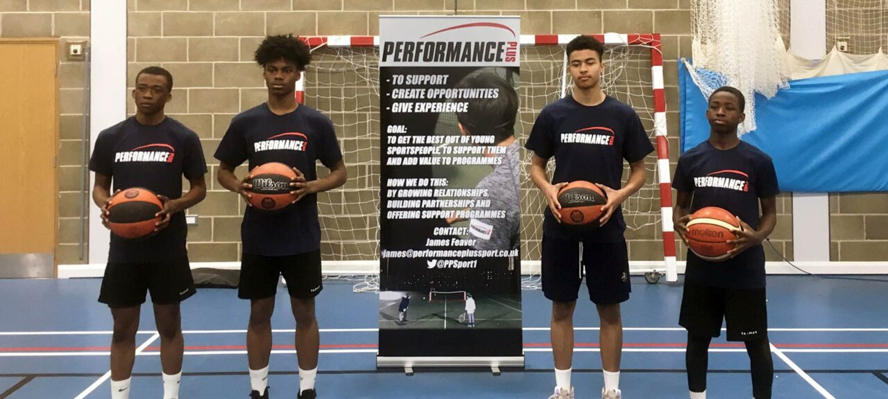

Grants Programme Project
Performance Plus
Helping young people build skills, leadership and belonging through sport.
Project overview
Progress through sport and mentorship
The Altenburg Foundation has worked closely with Performance Plus since its inception in 2016.
The organisation uses sport, mentorship and guidance to support young people as they build confidence, develop skills and consider routes into community contribution, sporting progress and future careers.
Performance Plus has worked in strategic partnership with the Tim Henman Foundation since 2021.
Who the project serves
Young people supported to move forward
Sport provides a practical setting for discipline, teamwork, confidence and belonging.
The relationship combines activity with mentorship and guidance so that progress can extend beyond the sporting environment.
Partnership in practice
What the partnership enables
Sport
Structured sporting activity creates a practical environment for participation and progression.
Mentorship
Guidance supports confidence, decision-making and personal development.
Progression
Young people are supported to consider routes into community contribution, sport and future careers.
Partner organisation
Work led close to the community
Learn more about Performance Plus and its wider work.
Visit Performance Plus websiteGet involved
Support community-led opportunity
Support can help young people access sport, mentorship and routes towards future opportunity. Contact the Foundation to discuss involvement.